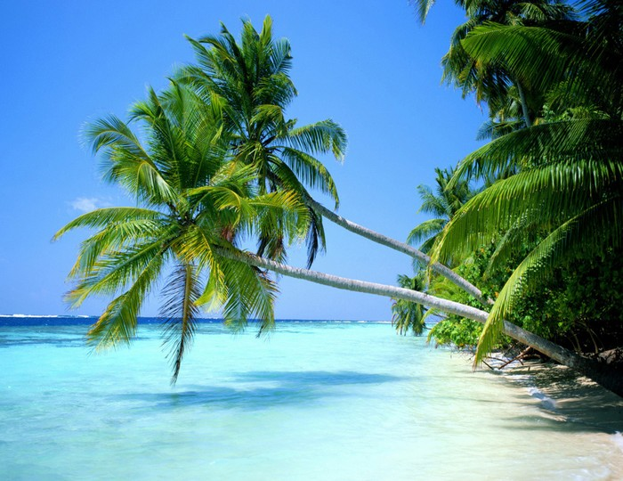
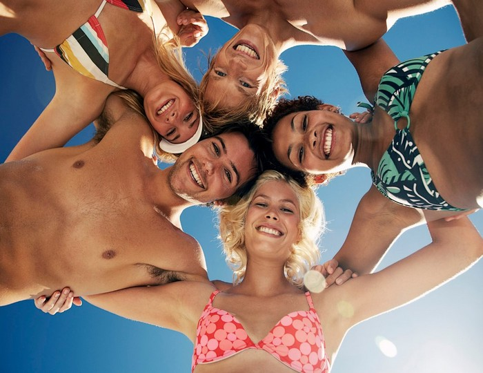
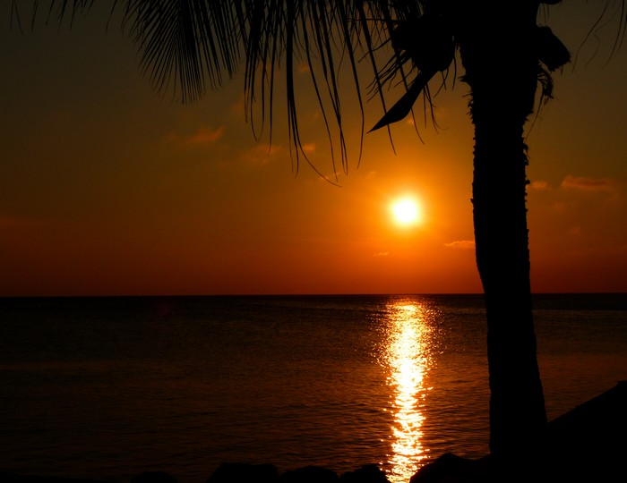

Cayman Paradise was created in 2005 and since then it has helped thousands of people make their dream vacations come true. Our aim is to match every traveler with their perfect rental home in order to create a positive and memorable travel experience. Our motive and inspiration comes from our love of Cayman Islands. Here you will enjoy sunbathing, watersports, small excursions on the islands and sample the local dishes and seafood. Cayman Islands are also known for their rich history and architectural treasures that attracts thousands of tourists every year


Cayman Paradise foundation donate 10% of its net profit to CNS (child protection training). CNS is an organization that is aiming in educating children in order to help them understand and recognize the indicators of abuse or neglect and learn how to respond and report it. This is a problem that Cayman Islands has been facing for many years. CNS is making a significant work on encountering and finally changing this situation
